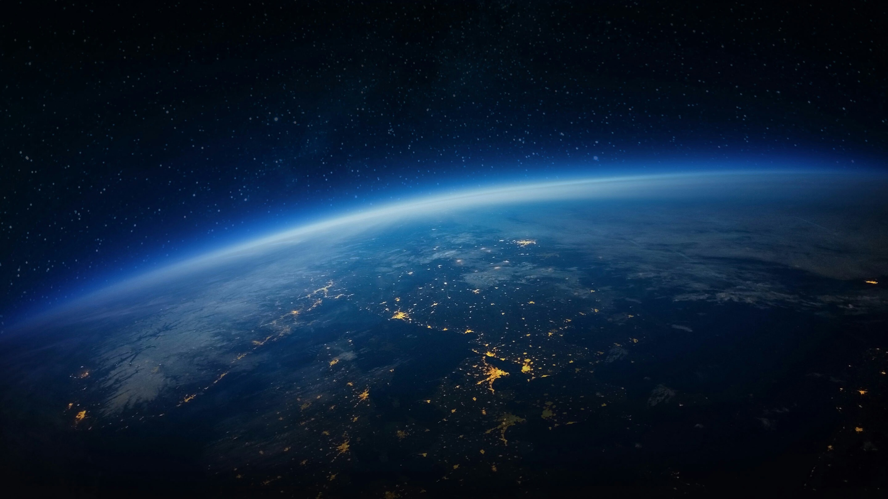

A Mars a Naptól számított negyedik bolygó a Naprendszerben. Vörös színe miatt a római hadistenről nevezték el. Mars Itália és Róma egyik legrégebbi istene. A Mars első megfigyelői az egyiptomiak voltak, az ábrázolásokon "a horizont Hórusza" név alatt tűnik fel. Az egyiptomiak mellett a görögök is élen jártak a Mars vizsgálódásában. I. e. 300 körül Arisztotelész megállapította, hogy a Mars távolabb van a Földtől, mint a Hold.
A 16. század végén a dán csillagász, Tycho Brahe éveken át minden korábbinál pontosabban megmérte a Mars pozícióját a csillagokhoz képest. Brahe asszisztense, Johannes Kepler, német csillagász, javarészt a Mars ezen megfigyeléseire alapozva állapította meg a bolygók mozgásának első két törvényét.
1. A bolygók a Nap körül ellipszis alakú pályán mozognak, az ellipszis egyik gyújtópontjában van a Nap. 2. A bolygó és a Nap közötti szakasz egyenlő idők alatt egyenlő területeket súrol. Eszerint a bolygó napközelben gyorsabban, naptávolban lassabban mozog. 1877 óta, amikor Schiaparelli bejelentette, hogy vonalakból álló hálózatot fedezett fel a Mars felszínén, a bolygó rengeteg vitát váltott ki. Sokan mesterséges csatornarendszernek vélték a hálózatokat. Későbbi megfigyelések cáfolták ezt az elképzelést.
A Mars a Földtől nézve az első külső bolygó. A csillagokhoz képest időnként hurok alakú pályát ír le. Naptól való távolsága a Föld naptávolságának 1,52-szerese. Átmérője kb. fele a Földének, tömege csak tizede annak. Kőzetbolygó (Föld-típusú bolygó), sok mindenben a Földhöz leginkább hasonló égitest. Tőlünk való távolsága és látszó mérete erősen változik. Elnyúlt pályája miatt a földközelségkori távolság is változó.
Forgástengelye szinte ugyanúgy áll, mint a Földé, vannak rajta évszakok. A marsi évek nagyjából kétszer olyan hosszúak, mint a földiek, az ottani évszakok is kétszer annyi ideig tartanak, mint a Földön. A Marson az évszakok sokkal szélsőségesebbek, mint nálunk. Az évszakok váltakozásának tudható be, hogy amikor a Mars déli féltekéjén tél van, a déli jégsapka a bolygó déli félgömbjének akár a felét is beboríthatja, míg például ugyanott nyáron a jégsapka gyakran el is tűnik. Az északi féltekén hasonló változásokat lehet megfigyelni.
A északi félgömb átlagos magassági szintje jóval mélyebben van, mint a déli (1, 2). Felszínén hatalmas vulkáni kúpok és pajzs formájú vulkáni hegyek emelkednek, a déli félgömböt idős becsapódási kráterek borítják. A 300 méternél nagyobb, nemegyszer néhány száz kilométer átmérőjű kráterek valószínűleg a bolygó testébe csapódott kisbolygók nyomán alakultak ki, ami azért sem meglepő, mert e parányi égitestek övezete a Mars pályája közelében húzódik. A Mars déli féltekéje számos nagyméretű, kör alakú medencét foglal magában, melyek közül a 2000 km átmérőjű Hellasz a legnagyobb. Vörös színét a vas-oxidban gazdag homok és por adja. A ritka légkör ellenére erős szelek és hatalmas porviharok (porördögök) alakulhatnak ki.
A Mars legnagyobb vulkánja, az Olympus Mons egy hatalmas, 25 km magasságú, 600 km átmérőjű pajzsvulkán. Valles Marineris: az egyenlítőtől 4000 km-re délre húzódó kanyonrendszer, amelynek maximális szélessége eléri a többszáz kilométert, mélysége pedig a 6 kilométert. Az egyik lepusztult hegy - ha bizonyos szögben éri a napfény - hasonlít egy arcra.
Különösen érdekes a sarki hósapkák peremvidéke (HST), ahol több száz krátert részben vagy teljesen fagyott vízjég és szárazjég tölt ki. A jég alakzatai idővel változnak. A Mars felszínén jelenleg nem található cseppfolyós víz, de számos bizonyíték arra utal, hogy a múltban volt. Találhatók ugyanis kiszáradt folyómedrekhez hasonló domborzati képződmények, teraszok és olyan csepp alakú törmelék-lerakódások, amelyeket általában üledéket hordozó erős sodrású folyóvizek raknak le az akadályt képező tereptárgyak körül.
Légköre nagyon vékony és ritka, nagyrészt szén-dioxid alkotja (96%), mellette nitrogén és argon, nyomokban oxigén és vízgőz. A légköri nyomás kb. a földi légkör nyomásának a százada, ezért űrruha nélkül nem lehet kilépni a felszínre. A Marson állva az égbolt nem kék színűnek látszik, mint nálunk tiszta időben, hanem inkább halvány narancsvörösnek vagy rózsaszínűnek. Zord éghajlata van (átlaghőmérséklete: –32 °C), ezért sarkvidékeit szén-dioxidból (szárazjég) és vízjégből álló hósapka borítja. A jégsapkák közelében érdekes, fekete foltok jelennek meg időnként (sötét dűnefoltok). Egyes kutatók szerint lehet, hogy élő szervezetek találhatók ezen foltokban. A Mars mágneses tere rendkívül gyenge.
A Marsot meglátogató első sikeres űrszonda a Mariner-4 volt 1965-ben. A későbbiekben tucatnyi szovjet és amerikai, európai és japán űrszonda (keringőegység, leszállóegység és marsjáró), indult a Marshoz, hogy tanulmányozza a felszínét és éghajlatát. Ezek közül a legsikeresebbek: a Mariner és a Viking-program, a Mars Global Surveyor, a Mars Odyssey, amely neutron- és gammasugárzást mérve közvetetten kimutatta a talajban a vizet, az MRO, a Phoenix és a Mars Express. Utóbbi a Beagle-2 talajvizsgáló, életnyomkereső leszálló egységet is vitte, amellyel végül a kapcsolat nem jött létre. A Mars Express keringő egység viszont csodálatosan részletgazdag felvételeket készített (link) és a talajban lévő vízre utaló jeleket mért.
A Pathfinder kis marsjárónál a fékezőernyő és fékezőrakéták után felfújódó légzsákokat használtak a leérkező egység sérülése ellen. Később a Spirit és az Opportunity roverek a felszínen mozogva rengeteg képet, adatot szolgáltattak. A 3 hónapra tervezett működésük már 2004 óta tart. Meteoritokat is találtak. A NASA és az ESA is folytatja a Mars kutatását az ExoMars programban.
Az embereket szállító Mars-expedíció megvalósulása 2025 előtt nem valószínű. Számos előkészítő kísérletet, szimulációt végeznek ehhez: egyrészt több száz napra bezárnak önkénteseket egy földi űrhajó-makettbe, másrészt a marsihoz hasonló sivatagos vidéken marsi bázist építettek, ahol váltott legénység dolgozik (magyarok is részt vettek benne, Utah).
A Földön talált meteoritok közül néhányról (pl. az ALH84001 anyaga, a benne talált nanobaktériumokhoz hasonló lenyomatok, magnetitkristályok és az üregekben lévő gáz összetétele alapján) kiderült, hogy a Marsról származik. Egy ottani becsapódás során dobódhatott ki törmelék, aminek egy része eljuthatott a Földre. Ilyen módon akár az élet is vándorolhat a bolygók között.